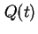
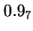
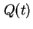
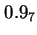
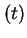
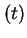
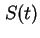
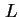
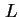

Next: งานประยุกต์ของระบบที่คงทนต่อความเสียหาย
Up: พื้นฐานระบบที่คงทนต่อความเสียหาย
Previous: กล่าวนำ
Contents
Index
ความสามารถของการคงทนต่อความเสียหายมีความสำคัญ ในการออกแบบระบบคอมพิวเตอร์ใดๆ ในการระบุความสามารถของการคงทนต่อความเสียหาย จำเป็นต้องมีความต้องการตัววัดประสิทธิภาพเพิ่มขึ้นหลายประการ ได้แก่ ความน่าเชื่อถือ (Reliability), ความสามารถในการคงการบริการ (Availability), ความปลอดภัย (Safety), ความสามารถในการสร้างประสิทธิผล (Performability), ความสามารถในการบำรุงรักษา (Maintainability), ความสามารถในการทดสอบ (Testability) โดยมีนิยามดังต่อไปนี้
- ความน่าเชื่อถือ (Reliability):
ความน่าเชื่อถือของระบบ
 เป็นฟังก์ชั่นของเวลา นิยามเป็นความน่าจะเป็นแบบมีเงื่อนไขของระบบที่จะทำงานอย่างถูกต้องตลอดช่วงเวลา
เป็นฟังก์ชั่นของเวลา นิยามเป็นความน่าจะเป็นแบบมีเงื่อนไขของระบบที่จะทำงานอย่างถูกต้องตลอดช่วงเวลา ![$[t_0, t]$](img602.png) โดยที่ระบบทำงานอย่างถูกต้องที่เวลา
โดยที่ระบบทำงานอย่างถูกต้องที่เวลา  อีกนัยหนึ่งความน่าเชื่อถือ
คือความน่าจะเป็นที่ระบบจะทำงานได้อย่างถูกต้องตลอดช่วงเวลาที่เลือกไว้
ความไม่น่าเชื่อถือ  เป็นฟังก์ชั่นของเวลา นิยามเป็นความน่าจะเป็นแบบมีเงื่อนไขของระบบที่จะทำงานอย่างไม่ถูกต้องในช่วงเวลา โดยที่ระบบทำงานอย่างถูกต้องที่เวลา อาจถูกเรียกว่าเป็นความน่าจะเป็นที่ระบบจะทำงานล้มเหลวในช่วงเวลาที่เลือกไว้
ความน่าเชื่อถือเป็นตัววัดที่ใช้มากที่สุดในการระบุคุณลักษณะของระบบ ที่การล้มเหลวในการทำงานไม่สามารถยอมรับได้ หรือระบบที่ไม่สามารถซ่อมแซมได้ ตัวอย่างเช่น การประยุกต์ใช้งานในอวกาศ ช่วงเวลาการทำงานจะยาวนาน บางครั้งถึงสิบปี หรือการประยุกต์ใช้งานระบบคอมพิวเตอร์ในการควบคุมการบิน ช่วงเวลาการทำงานอยู่ในระดับชั่วโมง ความน่าเชื่อถือของการทำงานในช่วงดังกล่าวอยู่ในระหว่าง 0.9999 หรือสูงกว่า
รูปแบบการแสดงความน่าเชื่อถือ อย่างสั้นสามารถทำได้โดยใช้เลขจำนวนเต็มแทนเลข 9 ตัวอย่างเช่น 0.9999999 แทนด้วย 
ความเข้าใจที่สำคัญประการหนึ่งคือความแตกต่างระหว่าง ความคงทนต่อความเสียหาย กับ ความน่าเชื่อถือ
ความคงทนต่อความเสียหาย สามารถเพิ่มความน่าเชื่อถือได้ แต่ระบบที่คงทนต่อความเสียหาย ไม่จำเป็นต้องมีความน่าเชื่อถือสูง เราสามารถออกแบบระบบให้คงทนต่อความเสียหายทั้งในฮาร์ดแวร์ และ ซอฟต์แวร์ แต่ถ้าความน่าจะเป็นที่จะเกิดความล้มเหลวสูงมาก ความน่าเชื่อถือของระบบก็จะต่ำ เช่นเดียวกัน ระบบที่มีความน่าเชื่อถือสูงไม่จำเป็นต้องความคงทนต่อความเสียหาย ถ้าระบบออกแบบอย่างง่ายไม่ซับซ้อน และใช้อุปกรณ์หรือส่วนประกอบที่มีคุณภาพสูง ความน่าจะเป็นที่ระบบจะเสียหายย่อมต่ำ ดังนั้นความน่าเชื่อถือของระบบจึงสูงได้
อีกนัยหนึ่งความน่าเชื่อถือ
คือความน่าจะเป็นที่ระบบจะทำงานได้อย่างถูกต้องตลอดช่วงเวลาที่เลือกไว้
ความไม่น่าเชื่อถือ  เป็นฟังก์ชั่นของเวลา นิยามเป็นความน่าจะเป็นแบบมีเงื่อนไขของระบบที่จะทำงานอย่างไม่ถูกต้องในช่วงเวลา โดยที่ระบบทำงานอย่างถูกต้องที่เวลา อาจถูกเรียกว่าเป็นความน่าจะเป็นที่ระบบจะทำงานล้มเหลวในช่วงเวลาที่เลือกไว้
ความน่าเชื่อถือเป็นตัววัดที่ใช้มากที่สุดในการระบุคุณลักษณะของระบบ ที่การล้มเหลวในการทำงานไม่สามารถยอมรับได้ หรือระบบที่ไม่สามารถซ่อมแซมได้ ตัวอย่างเช่น การประยุกต์ใช้งานในอวกาศ ช่วงเวลาการทำงานจะยาวนาน บางครั้งถึงสิบปี หรือการประยุกต์ใช้งานระบบคอมพิวเตอร์ในการควบคุมการบิน ช่วงเวลาการทำงานอยู่ในระดับชั่วโมง ความน่าเชื่อถือของการทำงานในช่วงดังกล่าวอยู่ในระหว่าง 0.9999 หรือสูงกว่า
รูปแบบการแสดงความน่าเชื่อถือ อย่างสั้นสามารถทำได้โดยใช้เลขจำนวนเต็มแทนเลข 9 ตัวอย่างเช่น 0.9999999 แทนด้วย 
ความเข้าใจที่สำคัญประการหนึ่งคือความแตกต่างระหว่าง ความคงทนต่อความเสียหาย กับ ความน่าเชื่อถือ
ความคงทนต่อความเสียหาย สามารถเพิ่มความน่าเชื่อถือได้ แต่ระบบที่คงทนต่อความเสียหาย ไม่จำเป็นต้องมีความน่าเชื่อถือสูง เราสามารถออกแบบระบบให้คงทนต่อความเสียหายทั้งในฮาร์ดแวร์ และ ซอฟต์แวร์ แต่ถ้าความน่าจะเป็นที่จะเกิดความล้มเหลวสูงมาก ความน่าเชื่อถือของระบบก็จะต่ำ เช่นเดียวกัน ระบบที่มีความน่าเชื่อถือสูงไม่จำเป็นต้องความคงทนต่อความเสียหาย ถ้าระบบออกแบบอย่างง่ายไม่ซับซ้อน และใช้อุปกรณ์หรือส่วนประกอบที่มีคุณภาพสูง ความน่าจะเป็นที่ระบบจะเสียหายย่อมต่ำ ดังนั้นความน่าเชื่อถือของระบบจึงสูงได้
- ความสามารถในการคงการบริการ (Availability):
ตัววัดประสิทธิภาพที่สำคัญอีกประการหนี่งใน การแสดงถึงประสิทธิภาพของระบบในแง่ของความสามารถในการให้บริการ คือ ความสามารถในการคงการบริการ
ความสามารถในการคงการบริการ
 เป็นฟังก์ชั่นของเวลา นิยามว่าเป็นความน่าจะเป็นที่ระบบทำงานอย่างถูกต้อง และสามารถบริการตามฟังก์ชั่นได้ ณ. เวลา 
ความสามารถในการคงการบริการ แตกต่างจากความน่าเชื่อถือคือ ความน่าเชื่อถือนิยามในช่วงการทำงาน ในขณะที่ความสามารถในการคงการบริการนิยาม ณ. เวลา
ระบบสามารถมีความสามารถในการคงการบริการสูง แม้ว่าจะเกิดการหยุดบริการบางครั้งในช่วงการทำงาน ถ้าช่วงเวลาดังกล่าวสั้นมากๆ หรืออีกนัยหนึ่งความสามารถในการคงการบริการ ขึ้นอยู่กับความสามารถในการทำงานของระบบ และความสามารถในการซ่อมระบบให้ทำงานได้ในเวลาอันสั้น
การวัดอีกลักษณะหนึ่งของความสามารถในการคงการบริการ คือส่วนของเวลาที่ระบบทำงานตามฟังก์ชั่นอย่างถูกต้องเทียบกับเวลาทั้งหมด
ถ้าเราต้องการโดยสารทางเครื่องบิน เราต้องการเครื่องบินที่มีความน่าเชื่อถือสูง ในทางกลับกัน ถ้าเราต้องการใช้โทรศัพท์เราต้องการระบบโทรศัพท์ที่มีความสามารถในการคงการบริการสูง
เป็นฟังก์ชั่นของเวลา นิยามว่าเป็นความน่าจะเป็นที่ระบบทำงานอย่างถูกต้อง และสามารถบริการตามฟังก์ชั่นได้ ณ. เวลา 
ความสามารถในการคงการบริการ แตกต่างจากความน่าเชื่อถือคือ ความน่าเชื่อถือนิยามในช่วงการทำงาน ในขณะที่ความสามารถในการคงการบริการนิยาม ณ. เวลา
ระบบสามารถมีความสามารถในการคงการบริการสูง แม้ว่าจะเกิดการหยุดบริการบางครั้งในช่วงการทำงาน ถ้าช่วงเวลาดังกล่าวสั้นมากๆ หรืออีกนัยหนึ่งความสามารถในการคงการบริการ ขึ้นอยู่กับความสามารถในการทำงานของระบบ และความสามารถในการซ่อมระบบให้ทำงานได้ในเวลาอันสั้น
การวัดอีกลักษณะหนึ่งของความสามารถในการคงการบริการ คือส่วนของเวลาที่ระบบทำงานตามฟังก์ชั่นอย่างถูกต้องเทียบกับเวลาทั้งหมด
ถ้าเราต้องการโดยสารทางเครื่องบิน เราต้องการเครื่องบินที่มีความน่าเชื่อถือสูง ในทางกลับกัน ถ้าเราต้องการใช้โทรศัพท์เราต้องการระบบโทรศัพท์ที่มีความสามารถในการคงการบริการสูง
- ความปลอดภัย (Safety):
ความปลอดภัย 
คือความน่าจะเป็นที่ระบบจะทำงานอย่างถูกต้องตามฟังก์ชั่น หรือหยุดการทำงานตามฟังก์ชั่นโดยไม่ส่งกระทบเสียหายต่อระบบอื่น หรือส่งผลเสียหายต่อชีวิต และทรัพย์สินที่เกี่ยวข้องกับระบบ
ความปลอดภัยเป็นการวัดคุณลักษณะ Failed-Safe ของระบบ ถ้าระบบทำงานไม่ถูกต้อง อย่างน้อยเราต้องการให้ระบบหยุดการทำงานอย่างปลอดภัย
ตัวอย่างเช่นถ้าระบบนักบินอัตโนมัติไม่สามารถทำงานได้ ความเสียหายดังกล่าวก็ไม่ควรจะกระทบต่อการควบคุมด้วยมือปกติของเครื่องบิน หรือในกระบวนการผลิตทางเคมี วาล์วควบคุมจะมีการกำหนดตำแหน่งของวาล์วเมื่อเกิดการเสียหายหรือไม่มีกำลังในการทำงานเช่น Fail-Open หรือ Fail-Close เพื่อให้ระบบยังมีความปลอดภัย และไม่ก่อให้เกิดสภาพอันตราย เช่น ความดันเกินพิกัด
ความปลอดภัยต่างจากความน่าเชื่อถือ เนื่องจากความน่าเชื่อถือเป็นความน่าจะเป็นที่ระบบจะทำงานอย่างถูกต้อง ส่วนความปลอดภัยเป็นเป็นความน่าจะเป็นที่ระบบจะทำงานอย่างถูกต้อง หรือหยุดการทำงานโดยไม่มีความเสียหาย
- ความสามารถในการสร้างประสิทธิผล (Performability):
ระบบคอมพิวเตอร์ที่คงทนต่อความเสียหาย สามารถทำงานได้ตามฟังก์ชั่นในขณะที่มีการเสียหายของฮาร์ดแวร์ และซอฟต์แวร์ อย่างไรก็ตามถึงแม้จะทำงานได้ ระดับของประสิทธิภาพอาจลดลงจากสภาวะปกติ
ตัวอย่างเช่น ในระบบคอมพิวเตอร์ที่มีตัวประมวลผลหลายตัว ระบบอาจคงทำงานได้แม้ว่ามีการเสียหายของตัวประมวลผลบางตัว แต่ประสิทธิภาพโดยรวมของระบบก็จะลดลงตามส่วน ในรูปของอัตราความสามารถในการประมวลผล หรือขนาดของหน่วยความจำ ในตัวอย่างนี้ถึงแม้ว่าระบบจะยังสามารถทำงานได้ ประสิทธิภาพก็ลดลง
ความสามารถในการสร้างประสิทธิผล
 ของระบบเป็นฟังก์ชั่นของเวลา นิยามเป็นคือความน่าจะเป็นที่ระบบจะมีประสิทธิภาพที่ระดับ  หรือสูงกว่า ณ. เวลา
ของระบบเป็นฟังก์ชั่นของเวลา นิยามเป็นคือความน่าจะเป็นที่ระบบจะมีประสิทธิภาพที่ระดับ  หรือสูงกว่า ณ. เวลา  ตัวอย่างของ ประสิทธิภาพที่ระดับ ได้แก่ระดับของประสิทธิภาพอาจเป็นจำนวนตัวประมวลผลที่ยังคงทำงานอยู่
Graceful Degradation คือการเสื่อมสภาพอย่างค่อยเป็นค่อยไป เป็นคุณลักษณะที่สำคัญอีกประการหนึ่ง Graceful Degradation เป็นความสามารถของระบบที่จะลดประสิทธิภาพการทำงานของระบบอัตโนมัติ ตามความเสียหายของฮาร์ดแวร์ และ ซอฟต์แวร์
ตัวอย่างของ ประสิทธิภาพที่ระดับ ได้แก่ระดับของประสิทธิภาพอาจเป็นจำนวนตัวประมวลผลที่ยังคงทำงานอยู่
Graceful Degradation คือการเสื่อมสภาพอย่างค่อยเป็นค่อยไป เป็นคุณลักษณะที่สำคัญอีกประการหนึ่ง Graceful Degradation เป็นความสามารถของระบบที่จะลดประสิทธิภาพการทำงานของระบบอัตโนมัติ ตามความเสียหายของฮาร์ดแวร์ และ ซอฟต์แวร์
- ความสามารถในการบำรุงรักษา (Maintainability):
การออกแบบระบบคอมพิวเตอร์ทุกอย่างมีเป้าหมายเพื่อระบบสามารถบำรุงรักษาได้ ความสามารถในการบำรุงรักษาเป็นการวัดความสะดวกที่จะบำรุงรักษาระบบเมื่อเกิดความเสียหาย ถ้าจะกล่าวในรูปของการวัดเชิงปริมาณ ความสามารถในการบำรุงรักษา M(t) เป็นความน่าจะเป็นที่ระบบที่เสียหายจะสามารถฟื้นคืนกลับมาทำงานตามสภาวะปกติ ภายในระยะเวลา ได้ กระบวนการฟื้นคืนสภาพประกอบด้วยการหาต้นตอปัญหาที่เสียหาย การซ่อมและการนำระบบฟื้นคืนมาทำงานตามปกติ
- ความสามารถในการทดสอบ (Testability):
การทดสอบหมายถึงการสอบสภาพการคงอยู่และคุณภาพบางประการในระบบ ตัวอย่างเช่น ตัวประมวลผลสมควรจะต้องทำงานได้สามพันล้านคำสั่งต่อวินาที เราอาจจะต้องออกแบบการทดสอบว่าตัวประมวลผลสามารถจะทำงานได้จริงหรือไม่
ความสามารถในการทดสอบ
คือความสามารถที่จะทดสอบคุณลักษณะบางประการของระบบ
- ความสามารถในการพึ่งพา (Dependability):
ความสามารถในการพึ่งพาเป็นการ รวมแนวคิดของตัววัดประสิทธิภาพทั้งหมดที่กล่าวมา ความน่าเชื่อถือ (Reliability), ความสามารถในการคงการบริการ (Availability), ความปลอดภัย (Safety), ความสามารถในการสร้างประสิทธิผล (Performability), ความสามารถในการบำรุงรักษา (Maintainability), ความสามารถในการทดสอบ (Testability) หรืออีกนัยหนึ่งเป็นการวัดคุณภาพการบริการของระบบ
Vara Varavithya
2002-03-09